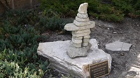
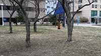

The depth maps presented here were obtained from three sources:
- Our depth estimation method with temporal interpolation (temporal).
- Our depth estimation method without temporal interpolation (online).
- Full-resolution DBIR results as presented in the paper.
- The output of ACTS.
| Sequences | ||
|---|---|---|
|  |  | |